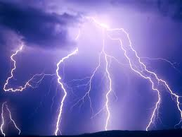
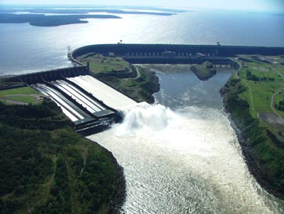

Energia Elettrica |
Definizioni |
Immagini |
Produzione Energia Elettrica |
Nel linguaggio comune, quando si parla di energia elettrica, ci si riferisce all’energia prodotta da una corrente elettrica, da un determinato flusso di cariche elettriche, vale a dire, che in un certo intervallo di tempo attraversa una data superficie. Detta specie d’energia si manifesta in natura, in una forma che non è immediatamente controllabile. |  |
Centrale Elettriche |
Una centrale elettrica è un impianto industriale atto alla produzione di energia elettrica. La società moderna si basa in maniera imprescindibile sull'uso dell'energia elettrica, perciò la produzione di tale energia e, conseguentemente, le centrali elettriche hanno un'importanza tecnologica e strategica fondamentale. Le centrali elettriche odierne producono energia quasi esclusivamente in corrente alternata avvalendosi di macchine elettriche denominate alternatori. Esistono eccezioni in Russia, dove, per problemi di perdite su elettrodotti estremamente lunghi, sono state create centrali elettriche in corrente continua (HVDC). |  |
Centro Formazione Professionale Galdus. Sede Via Pompeo Leoni 2 .